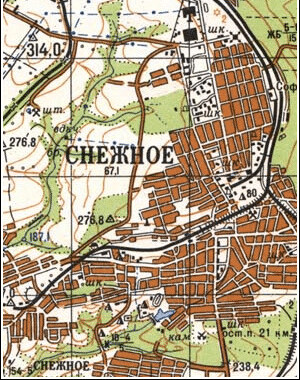

Инфраструктура
География
Город расположен на востоке Донецкой области, граница с Луганской областью подходит к его северо-восточным окраинам. Соседние населённые пункты по странам света:
С: Садово-Хрустальненский и Грабово
СЗ: Пелагеевка
СВ: Коренное — в Луганской области
З: город Торез (примыкает)
В: Зрубное
ЮЗ: Мануйловка, Петровское
ЮВ: Латышево, Дмитровка
Ю: Степановка, Мариновка
Административное деление
- Андреевский поселковый совет
- пгт Бражино
- Горняцкий поселковый совет
- Залесненский поселковый совет
- пгт Лиманчук
- Мочалино
- пгт Никифорово
- пгт Орехово
- Первомайский поселковый совет
- пгт Первомайское
- пгт Победа
- пгт Северный поселковый совет
- Суховское
Транспорт
Городской транспорт: В городе работает 16 маршрутов общественного транспорта, представленного автобусами и маршрутными такси.
Городские автобусные маршруты:
- 1 «АС городская — ш. Северная»
- 2 «АС городская — ш. Восход»
- 3 «АС городская — ш. Суховская»
- 4-А «АС междугородняя — ЦОФ Киселёва» (ч/з ул. 250 Лет Донбасса, Фрунзе)
- 6 «АС городская — п. Андреевка»)
- 7 «АС городская — п. Весёлое»
- 8 «АС городская — ш. 104»
- 9 «АС городская — ш. 1»
- 10 «АС междугородняя — ш. 2 — п. Победа
- 11 «Центр. рынок — АС городская — п. Первомайский»
- 14 «АС городская — Центр. рынок - п. Ремовка»
- 14-А «АС междугородняя — АС городская — п. Ремовка»
- 15 «АС междугородняя — ш. 8-9»
- 17 «АС городская — ЦГБ — ЖДВ — АС междугородняя»
- Снежное-Торез (кольцевой) «АС городская — АС Торез — ш. Заря — АС междугородняя — АС городская»